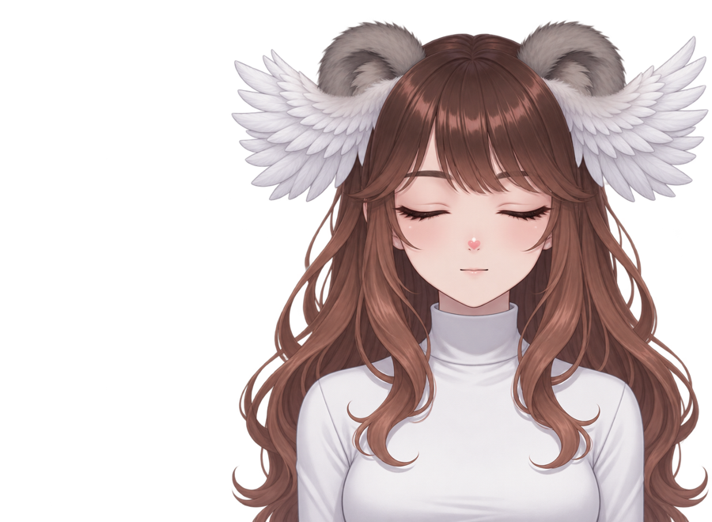

motion room
Extract movements from a recorded video. No voice, no microphone, no audio processing. The video stays in your browser; only motion parameters can be downloaded.

Playing a silent built-in movement demo. Choose a clip to replace it with extracted movements.
Privacy: video stays in this browser tab. Only the MediaPipe software and model files are fetched from external servers. No frames, recordings, audio, or biometric landmark meshes are uploaded or committed to GitHub. Export includes simplified motion coefficients, not the original footage.
This is an initial tracking and motion-data preview using your existing flattened avatar artwork. It is not a finished Live2D rig; true independent eye, hair, body and wing deformation needs a layered Cubism model. The body tracker can only recover parts visible in the footage. Detection and motion estimates are approximate.